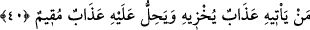
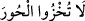

aslan çıktı. Aslana: “Ey aslan, ben Allah Rasûlü’nün âzadlı kölesi Sefîne’yim.
Maksadım da şöyle şöyledir.” deyince aslan yavaşça ona doğru geldi ve yanında durdu.
O da aslanın sırtına bindi. Aslan ne zaman bir ses duysa hemen onu oraya götürüyordu.
Böyle böyle ordunun olduğu yere vardılar, sonra da aslan geri döndü.
Burada birtakım işâretler bulunmaktadır:
1- Allah’ın koruması altındaki bir kişiye, yırtıcı bir hayvan bile zarar veremez. Böyle
olunca cansız varlıklar nasıl zarar verebilsin!
2- Allah’a itâat ve tevekkül etmek, helâk edici durumlardan kurtulma sebebidir.
3- Rasûlullah (s.a.)’in şefâatine başvurmak; îman, tevhîd ve sünnetiyle amel etmek
sûretiyle O’na yaklaşmaya çalışmak, kişiyi doğru yola iletir. Aynen Sefîne (r.a.)’ı
ilettiği gibi.
Şu halde akıllı kimseye düşen; tevhîdi hâlis kılmak ve Allah Teâlâ’dan başka
herşeyden (mâsivâ) yüz çevirmektir. Çünkü Allah Teâlâ, bütün hallerinde ve işlerinde
kuluna yeter.
39. De ki: Ey kavmim! Elinizden geleni yapın; doğrusu ben de yapacağım!
Yakında bileceksiniz!
“De ki: Ey kavmim! Elinizden geleni yapın;” İçinde bulunduğunuz düşmanlık
durumunuza göre (bildiğinizi) yapın. İfadeyi bu şekilde açıkladık, çünkü âyetteki “__WORD__
lafzı, aynî varlıklar için kullanılmakla birlikte burada olduğu gibi istiâre olarak mânâlar
(mücerred şeyler) için de kullanılır. “__WORD__ zaman içindir. Bununla birlikte ikisi de
mekân için kullanılır.
“Doğrusu ben de yapacağım!” yâni ben de gücüm yettiği kadar içinde bulunduğum
hal üzere devam ediyorum. Durumum ancak güç ve ilâhî yardım bakımından artıyor.
“Yakında bileceksiniz!”
40. Kendisini rezil edecek azap kime gelecek, kime sürekli azap inecek?
Kötü amelleri yüzünden “Kendisini rezil edecek azap kime gelecek…”
“__WORD__ aşağılamak, hor kılmak, rüsvây etmek ve helâk etmek demektir. Buradaki
kelimelerin mânâları birbirine yakındır. Bu kökten kelimenin geçtiği bir hadiste de şöyle
buyurulur: “__WORD__ yâni hûrileri yaptıklarınızdan utanacak duruma düşürmeyin,
demektir. Nitekim Tâcü’l-masâdır’da böyle geçmektedir.